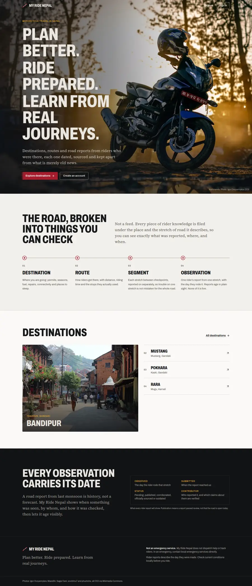
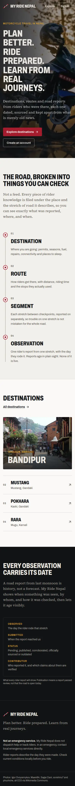
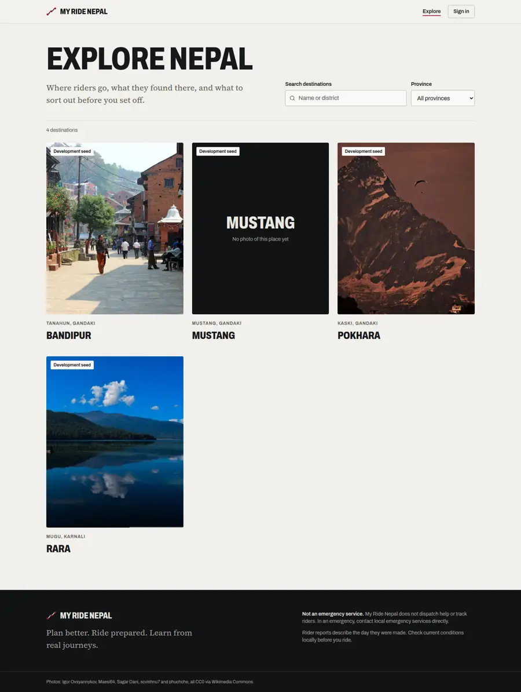
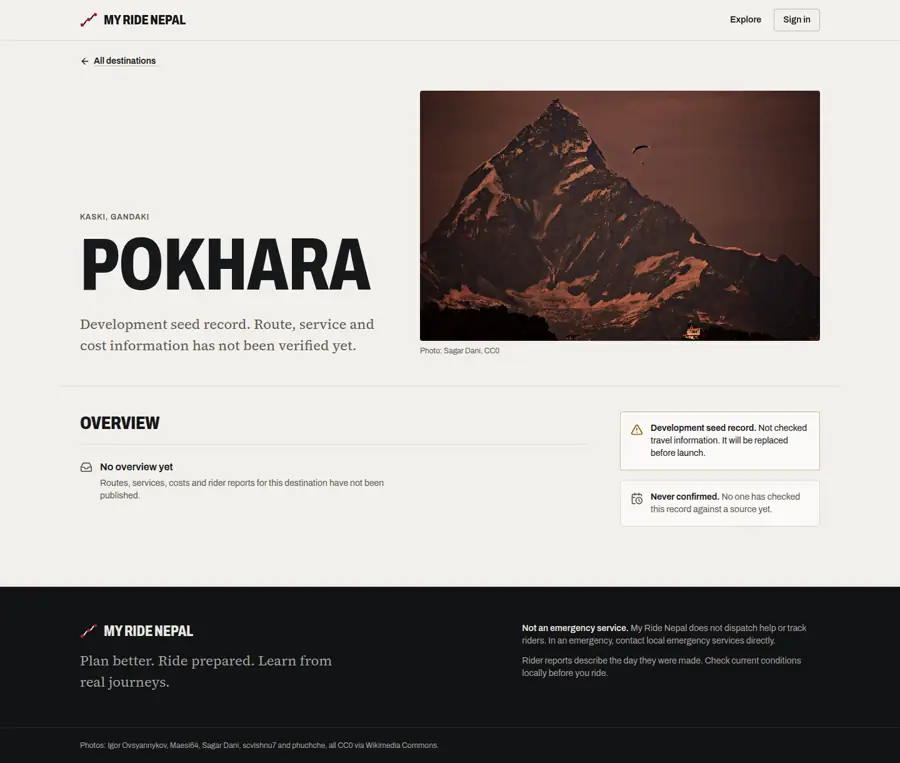
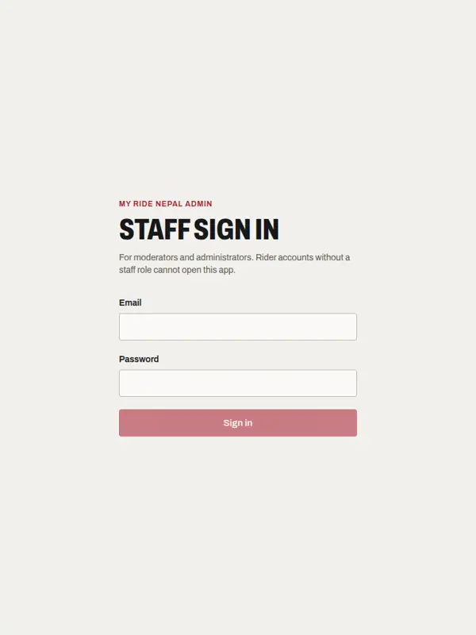

My Ride Nepal · Session report
Session 01: inspection, documentation and foundation
Objective
Follow the master brief and the "Mandatory Application Separation" addendum: inspect, reuse the Travel toolkit where it helps, write the documentation set, and deliver milestone M1, a secure and documented foundation with a working visual direction, with web and admin as separate applications.
Initial state
/var/www/html/Road-trip/held two empty git repos (Road-trip-web,Road-trip-admin, branchmain, no commits, remotes on GitHub). No CLAUDE.md, no docs, no Supabase config.- No saved "Project Creation & Final Audit Master Standard" file exists. The closest record is Travel's
PROJECT_AUDIT_CHECKLIST.md; categories A–M were taken from the brief itself.
Inspection performed
| Looked at | Found |
|---|---|
~/.claude/settings.json, installed_plugins.json | ui-ux-pro-max, ponytail, agent-skills, impeccable enabled at user scope |
Travel .claude/, web/docs/PROJECT_TOOL_INVENTORY.md, PROJECT_AUDIT_CHECKLIST.md | tool decisions (OmniRoute rejected, Strix pending), audit format, evidence rule |
| Travel memories (session rules, design rules, tooling) | owner rules: no commits/attribution, ask before risky installs, no invented data, CC0 photos only for the exact place |
| Machine | Node 24.18, pnpm 12.16, Docker 29, psql, Pillow; no Supabase CLI; graphify/uv no longer on PATH; Playwright Chromium 1248 cached |
| Wikimedia Commons (search API, no personal data sent) | CC0 "Parked Motorcycle", Kathmandu (hero) and Bandipur Balabazar; a CC0 "Lhakpa La" road photo was rejected because it is in Tibet |
Full tool table: docs/TOOLKIT_INSPECTION.md.
Architecture decisions
- Existing repos used as /web and /admin rather than renaming the owner's folders. Root
CLAUDE.mdandhandoff.mdare symlinks intoRoad-trip-web, which also ownssupabase/anddocs/(the root is not versioned). - No /shared yet: two separate repos cannot import a root folder without a third repo or package. DB types will be generated per app by the Supabase CLI; tokens are a commented copy. Owner decision recorded.
- Authorization in the database: RLS on every table, revoke-then-grant (Supabase grants everything by default), column-level update grants,
security definerhelpers with emptysearch_path, triggers for the verification state machine, no-self-review and audit logging. - One verification table covers identity, trip contributor, expert reviewer (per scope) and organizer applications, with pending/approved/rejected/suspended/revoked.
- Dependencies deferred: Pinia, GSAP/motion-v, Leaflet, PWA plugin, zod: each waits for the milestone that needs it.
Changes made
| Area | Files |
|---|---|
| Web app | scaffold, src/app/router, assets/styles/main.css, features/{home,explore,authentication,profiles}, components/{ui,navigation}, lib/{supabase,motion,format,useAsync}, 2 unit test files |
| Admin app | scaffold, router with staff guard, AdminLayout, sign-in, no-access, overview, staffAccess.ts + test |
| Database | 2 migrations, seed, supabase/tests/{auth_stub.sql, rls.test.sql, run.sh} |
| Photos | 4 places as WebP + LICENSES.md |
| Docs | PRODUCT_VISION, PRODUCT_SPECIFICATION, FEATURE_SCOPE, USER_JOURNEYS, EVENT_SYSTEM, USER_ROLES_AND_PERMISSIONS, CONTRIBUTION_TRUST_POLICY, SYSTEM_ARCHITECTURE, DATABASE_DESIGN, DEVELOPMENT_ROADMAP, DESIGN_SYSTEM, REDESIGN_PROGRESS, handoff, TOOLKIT_INSPECTION, PROJECT_AUDIT_CHECKLIST; README + CLAUDE.md in both repos |
Screenshots





Tests performed
| Check | Result |
|---|---|
web pnpm type-check, pnpm lint, pnpm build | pass (0 errors) |
web pnpm test:unit | 5/5 (date formatting, open-redirect guard) |
| admin type-check, lint, build | pass |
admin pnpm test:unit | 3/3 (access decision) |
pnpm test:db: migrations + seed + RLS suite on postgres:17-alpine | all assertions pass |
Mutation check: destinations read policy loosened to using (true) in a temp copy | suite failed as it should ("guest sees the 4 published seed destinations, not the draft") |
| Browser sweep, web: 9 routes × 390/768/1440 | 27/27: 0 horizontal overflow, exactly 1 h1, 0 console errors |
| Browser sweep, admin: / and /no-access × 3 widths | 6/6, signed-out / redirects to sign-in |
| Contrast of token pairs (computed, WCAG) | muted 6.22, crimson 6.56, white-on-crimson 7.09, marigold-on-night 8.30 |
| Sign-up, sign-in, reset, profile save, staff overview with data | NOT TESTED: no Supabase Auth available (no project, no CLI) |
axe / screen reader / Lighthouse / pnpm audit | NOT RUN |
Problems and failed attempts
- RLS test helper order (
tests.loginbeforetests.uid) failed at creation; reordered. - A test wrongly expected guests to read 0 staff roles; guests correctly get "permission denied". Test fixed, policy unchanged.
- Vite dev server answered 504 "Outdated Optimize Dep" in headless Chromium; switched to production builds +
vite preview. - Playwright default headless shell 1247 missing; used cached Chromium 1248 via
executablePath. - First screenshots showed blank lazy images; the script now waits for every image.
- Design review of the first screenshots found: headline running into the motorcycle at 1440px, weak hero contrast on phones, the dark freshness band merging into the dark footer. All three fixed and re-checked.
- Admin overview: a generic typed count helper failed type-check; replaced with plain queries.
- An
rmof an old scratch screenshot folder was blocked by a safety check; nothing was deleted.
Security considerations
- Only the anon key is read from
VITE_variables;.env*.localis git-ignored; no secrets in either repo. - Tested refusals: guest writes, guest audit/roles reads, rider editing another profile or protected columns, self-promotion to admin, applying for someone else, self-approval, two open claims, moderator deciding organizer claims, admin approving own claim, illegal status jumps. Suspension removes organizer rights immediately.
- Post-login redirects accept same-site paths only. Password reset answers the same for unknown addresses.
- Docker images pulled this session:
postgres:17-alpine,postgrest/postgrest:v12.2.12. Harness containers and network removed at session end.
Remaining issues
- Live auth flows unverified; hand-written row types until
supabase gen types. - No CI, no backups, no monitoring, no privacy policy or account deletion yet (see audit checklist).
- Open owner decisions: folder names, shared-code approach, Supabase CLI approval, approval of the visual direction.
Next steps
- Owner decisions above.
- M1.5: Supabase CLI local stack, generated types, real auth journeys, pgTAP, GitHub Actions.
- M2: verification and organizer review workflow in both apps.